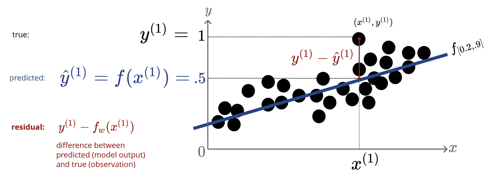
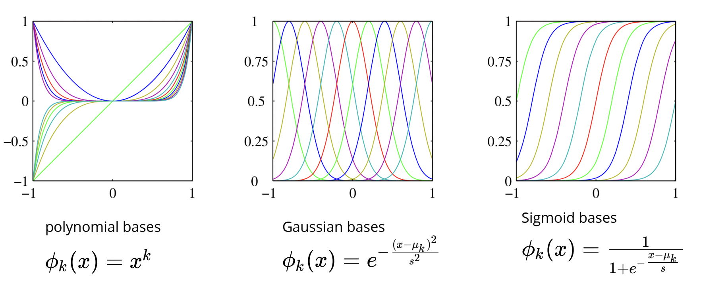
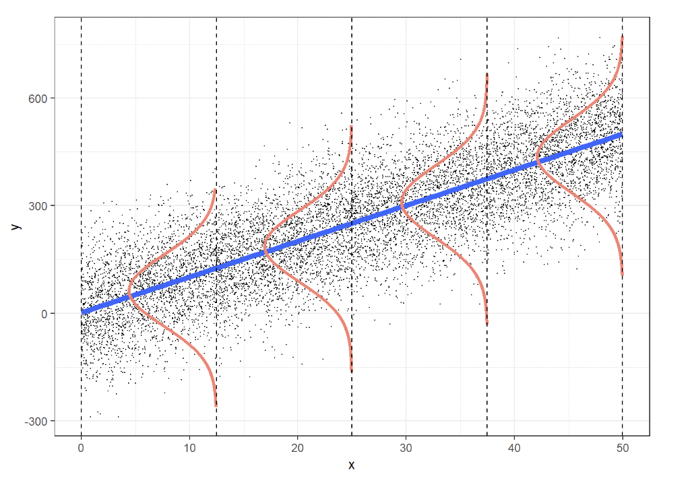

Linear Regression
Let us first import some libraries:
import numpy as np
#%matplotlib notebook
%matplotlib inline
import matplotlib.pyplot as plt
from IPython.core.debugger import set_trace
import warnings
warnings.filterwarnings('ignore')
Here we discuss linear regression, which is a very widely used method for predicting a real-valued output, and although is one of the most straightforward machine learning techniques, it's arguably the most important. The basic idea is that we want to predict a real-valued output (called the dependent variable or target) $y\in \mathbb{R}$, given a vector of real-valued inputs (called independent variables, or covariates) $x\in \mathbb{R}^{D}$ in the form:
$$x=\begin{bmatrix}x_1 \\ x_2 \\ \vdots \\ x_D\end{bmatrix}=\begin{bmatrix}x_1 & x_2 & \cdots & x_D\end{bmatrix}^{\top}$$We assume there are $N$ instances in the dataset $\mathcal{D}=\left\{\left(x^{(n)},y^{(n)}\right)\right\}_{n=1}^N$, with each instance having $D$ features indexed by $d$. Denote an instance of the dataset as $x^{(n)}\in \mathbb{R}^D$, or $y^{(n)}\in\mathbb{R}$. For example, we could write $x_d^{(n)}\in \mathbb{R}$ is a feature $d$ of instance $n$.
It is useful to put all of the covariates into a matrix. We simply concatenate all the feature vectors associated to each data point into a matrix, called the design matrix. Here, the rows are the datapoints associated to one instance, and the coumns are the datapoints associated with the feature.
$$\textbf{X}=\begin{bmatrix} x^{(1)^{\top}} \\ x^{(2)^{\top}} \\ \vdots \\ x^{(N)^{\top}} \end{bmatrix} =\begin{bmatrix} x_1^{(1)} & x_2^{(1)} & \cdots & x_D^{(1)} \\ \vdots & \vdots & \ddots & \vdots \\ x_1^{(N)} & x_2^{(N)} & \cdots & x_D^{(N)} \end{bmatrix}\in \mathbb{R}^{N\times D}$$It is then sensible to do the same with the labels of dependent variables, concatenating them into a column vector:
$$\mathbf{y}=\begin{bmatrix} y^{(1)} \\ y^{(2)} \\ \vdots \\ y^{(N)} \end{bmatrix}$$Define $f_w:\mathbb{R}^{D}\rightarrow \mathbb{R}$ as the mapping between the covariate inputs to the real-valued labeled output as:
$$f_w(x)+w_0+w_1x_1+\cdots+w_Dx_D$$The vector of parameters $w_{1:D}$ are known as the weights or regression coefficients. Each coefficient $w_d$ specifies the change in the output we expect if we change the corresponding input feature $x_d$ by one unit. For example, suppose $x_1$ is the age of a person, $x_2$ is their education level (represented as a continuous number), and $y$ is their income. Thus $w_1$ corresponds to the increase in income we expect as someone becomes one year older (and hence get more experience), and $w_2$ corresponds to the increase in income we expect as someone’s education level increases by one level. The term $w_0$ is the intercept or bias term, and specifies the output value if all the inputs are 0. This captures the unconditional mean of the response, $w_0 = \mathbb{E}[y]$, and acts as a baseline.
We will usually assume that $\mathbf{x}$ is written as $[1,x_1,\cdots,x_D]^{\top}$, so we can absorb the intercept term $w_0$ into the weight vector $\mathbf{w}=[w_0,w_1,\cdots,w_D]^{\top}$, and so we can write more compactly:
$$f_w(x)=\mathbf{w}^{\top}\mathbf{x}$$We can define our Linear Regression class as follows:
class LinearRegression:
def __init__(self, add_bias=True):
self.add_bias = add_bias
pass
def fit(self, x, y):
if x.ndim == 1:
x = x[:, None] #add a dimension for the features
N = x.shape[0]
if self.add_bias:
x = np.column_stack([x,np.ones(N)]) #add bias by adding a constant feature of value 1
#alternatively: self.w = np.linalg.inv(x.T @ x)@x.T@y
self.w = np.linalg.lstsq(x, y)[0] #return w for the least square difference
return self
def predict(self, x):
if self.add_bias:
x = np.column_stack([x,np.ones(N)])
yh = x@self.w #predict the y values
return yh
And then we can fit this linear model to toy data with $x \in \mathbb{R}^1$ + a bias parameter
N = 20
x = np.random.rand(N) * 10 #generate N random numbers from 0-10
y = -3*x + 3 + 1*np.random.randn(N) #generate y using a linear model and add some noise
model = LinearRegression()
yh = model.fit(x,y).predict(x)
plt.plot(x, y, '.')
plt.plot(x, yh, 'g-', alpha=.5)
plt.xlabel('x')
plt.ylabel(r'$y=xw_1 + w_0$')
plt.show()
How can we asses how well our model fits to our data? Consider the below diagram
Define $\hat{y}=f_w(x)$ as the predicted value given by our regression line, and let $y$ be the true data point. Define the residual as the difference between these values, $y-\hat{y}=y-f_w(x)$. Of course, the better out fit is, the smaller these residuals should be. To be able to quantify all the residuals, define the L2 loss as:
$$L(y,\hat{y})\stackrel{\Delta}{=}\frac 12(y-\hat{y})^2$$We square the residuals so they all turn positive, and it gives a "penalty" to residuals that may be larger, and hence not well fitted to our regression line. In addition, this function is very easy to differentiate if we want to optimize it (hence the factor of $\frac 12$). And that's exactly what we will do! We want to find parameters to fit the data as best as possible, i.e $f_w\left(x^{(n)}\right)\approx y^{(n)}$. Summing the residuals for all data points gives us the sum of squared errors or the cost/loss function:
$$J(w)=\frac 12 \sum_{n=1}^N \left(y^{(n)}-\mathbf{w}^{\top}x^{(n)}\right)^2$$And so, our problem is to find values for the weights, $w^*$ that minimizes $J(w)$, which is a process known as linear least squares. I.e finding $w^*$ such that:
$$w^*=\arg\min_w\sum_n \frac 12 \left(y^{(n)}-\mathbf{w}^{\top}x^{(n)}\right)^2$$Let's start with an easy example, with our model being $f_w(x)=wx$. Then we have:
$$J(w)=\frac 12 \sum_n \left(y^{(n)}-wx^{(n)}\right)^2\;\;\;\Longrightarrow\;\;\;\frac{dJ}{dw}=\sum_n x^{(n)}\left(wx^{(n)}-y^{(n)}\right)$$Setting the derivative to zero and solving for $w$, we obtain:
$$w^*=\frac{\sum_n x^{(n)}y^{(n)}}{\sum_n x^{(n)^2}}$$What about a simple linear regression case, where now we have weight $w_0$, and $w_1$? Well, we would then need to compute the partial derivative of the cost/loss function with respect to each variable to optimize it. In a similar spirit, for $D$ weights in our regression, we take the gradient of the cost/loss function:
$$\nabla J(\mathbf{w})=\begin{bmatrix} \frac{\partial}{\partial w_1}J(\mathbf{w}) \cdots \frac{\partial}{\partial w_D}J(\mathbf{w})\end{bmatrix}^{\top}$$And so, we can say in the general case, we optimize the weights indexed by $d$ by finding the critical points by setting:
$$\frac{\partial}{\partial w_d}J(\mathbf{w})=\frac{\partial}{\partial w_d}\sum_n \frac 12 \left(y^{(n)}-f_w\left(x^{(n)}\right)\right)^2=0$$By applying the chain rule:
$$\frac{\partial J}{\partial w_d}=\frac{dJ}{df_w}\frac{\partial f_w}{\partial w_d}=\sum_n \left(\mathbf{w}^{\top}x^{(n)}-y^{(n)}\right)x_d^{(n)}=0\;\;\;\;\forall\;d\in\{1,\dots,D\}$$But perhaps it is more convenient to do this analysis using vectors and matrices. In other terms, out linear least squares problem becomes:
$$\arg\min_w \frac 12 ||\mathbf{y}-\mathbf{X}\mathbf{w}||^2=\frac 12(\mathbf{y}-\mathbf{X}\mathbf{w})^{\top}(\mathbf{y}-\mathbf{X}\mathbf{w})=J(\mathbf{w})$$And differentiating:
$$\frac{\partial J(\mathbf{w})}{\partial \mathbf{w}}=\frac{\partial}{\partial \mathbf{w}}\left[\mathbf{y}^{\top}\mathbf{y}+\mathbf{w}^{\top}\mathbf{X}^{\top} \mathbf{X}\mathbf{w}-2\mathbf{y}^{\top}\mathbf{X}\mathbf{w}\right]$$Where we used the trick $\mathbf{y}^{\top}\mathbf{X}\mathbf{w}=\mathbf{w}^{\top}\mathbf{X}^{\top}\mathbf{y}$. Using some matrix differentiation, i.e $\frac{\partial \mathbf{X}\mathbf{w}}{\partial \mathbf{w}}=\mathbf{X}^{\top}$, and $\frac{\partial \mathbf{w}^{\top}\mathbf{X}\mathbf{w}}{\partial \mathbf{w}}=2\mathbf{X}\mathbf{w}$, we get:
$$\frac{\partial J(\mathbf{w})}{\partial \mathbf{w}}=0+2\mathbf{X}^{\top}\mathbf{X}\mathbf{w}-2\mathbf{X}^{\top}\mathbf{y}=2\mathbf{X}^{\top}(\mathbf{X}\mathbf{w}-\mathbf{y})$$Setting equal to 0:
$$\underbrace{\mathbf{X}^{\top}}_{D\times N}\underbrace{(\mathbf{y}-\mathbf{X}\mathbf{w})}_{N\times 1}=\mathbf{0}$$Notice the result is a vector of dimension $D$, that we want to be all $0$. So we can rearrange as:
$$\mathbf{X}^{\top}\mathbf{X}\mathbf{w}=\mathbf{X}^{\top}\mathbf{y}\;\;\;\Longrightarrow\;\;\;\boxed{\mathbf{w}^*=\left(\mathbf{X}^{\top}\mathbf{X}\right)^{-1}\mathbf{X}^{\top}\mathbf{y}}$$This gives us a closed form solution for the weights. However, no closed form solution will exist if $D>N$ (i.e we have more features than data points), or when the $\mathbf{X}^{\top}\mathbf{X}$ matrix is not invertible. This will occur if a zero eigenvalue exists, that is, if the features are completely correlated, or more generally, if the features/columns are not linearly independent.
Next, for the same toy data problem that we coded above, we plot the cost as a function of model parameters (weights), and show the correspondence between the different weights having different costs and their fit.
The plot_contour is a helper function we use for plotting the cost function moving forward. This gives a contour plot of f as a functions of two parameters that range between.
import itertools
def plot_contour(f, x1bound, x2bound, resolution, ax):
#function to plot the contours where f is the cost function
x1range = np.linspace(x1bound[0], x1bound[1], resolution)
x2range = np.linspace(x2bound[0], x2bound[1], resolution)
xg, yg = np.meshgrid(x1range, x2range)
zg = np.zeros_like(xg)
for i,j in itertools.product(range(resolution), range(resolution)):
zg[i,j] = f([xg[i,j], yg[i,j]])
ax.contour(xg, yg, zg, 100)
return ax
Now let's define the cost function for linear regression example above, and visualize the cost and the fit of various models (parameters).
cost = lambda w: .5*np.mean((w[0] + w[1]*x - y)**2) #function to compute the cost
model_list = [(1,0), (0,-2), (3,-3), (4,-4), (0,1)] #different weights of the model you want to consider
fig, axes = plt.subplots(ncols=2, nrows=1, constrained_layout=True, figsize=(10, 5))
plot_contour(cost, [-20,20], [-5,5], 50, axes[0])
colors = ['r','g', 'b', 'k','y']
for i, w in enumerate(model_list):
axes[0].plot(w[0], w[1], 'x'+colors[i]) #plot the contours
axes[1].plot(x, y, '.') #plot the points
axes[1].plot(x, w[0]+w[1]*x, '-'+colors[i], alpha=.5) #plot the lines
axes[0].set_xlabel(r'$w_0$')
axes[0].set_ylabel(r'$w_1$')
axes[0].set_title('weight space')
axes[1].set_xlabel('x')
axes[1].set_ylabel(r'$y=xw_1 + w_0$')
axes[1].set_title('data space')
plt.show()
From the elliptical level curve graph, we take weight points in the neighbourhood of the global minimum of our loss function, and use them as parameters for our regression line. As we can see, the weight parameters that correspond to the global minimum of the loss function (the blue point in the center of the innermost ellipse), does indeed fit the data the best.
What is the time complexity to compute these weights? Well, if we write out the dimensions of each element in the expression:
$$\mathbf{w}^*=\underbrace{\left(\mathbf{X}^{\top}\mathbf{X}\right)^{-1}}_{D\times D}\;\;\underbrace{\mathbf{X}^{\top}}_{D\times N}\;\;\underbrace{\mathbf{y}}_{N\times 1}$$Starting with $\mathbf{X}^{\top}\mathbf{y}$, this will return a vector with $D$ elements, and for each entry, we perform $N$ operations, so the running time is $\mathcal{O}(ND)$. For computing $\mathbf{X}^{\top}\mathbf{X}$, we will return a $D\times D$ matrix, with each entry we do $N$ operations, so the running time is $\mathcal{O}(D^2N)$. And finally, taking the inverse of a matrix, in general, will take $\mathcal{O}(D^3)$ time. So in total we have $\mathcal{O}(ND^2+D^3)$, which becomes $\mathcal{O}(ND^2)$ for $N>D$. However, even if it is theoretically possible to compute the pseudo-inverse by inverting $\mathbf{X}^{\top}\mathbf{X}$, we should not do so for numerical reasons, since $\mathbf{X}^{\top}\mathbf{X}$ may be ill conditioned or singular.
How about the case where we might have multiple targets? Well, it will just be a simple generalization of what we have seen: instead of $y\in \mathbb{R}^N$, we have $\mathbf{Y}\in \mathbb{R}^{N\times D'}$, that is, our target values are now a matrix, and we have a designated column vector of the weights for each column of our targets. Explicitly, this will be written out as:
\begin{align*}\underbrace{\hat{\mathbf{Y}}}_{N\times D'} =\underbrace{\mathbf{X}}_{N\times D}\;\;\underbrace{\mathbf{W}}_{D\times D'} =\begin{bmatrix}\hat{y}_1^{(1)} & \hat{y}_2^{(1)} \\ \hat{y}_1^{(2)} & \hat{y}_2^{(2)} \\ \vdots & \vdots \\ \hat{y}_1^{(N)} & \hat{y}_2^{(N)} \end{bmatrix}& =\begin{bmatrix} 1 & \hat{x}_1^{(1)} & \hat{x}_2^{(1)} & \cdots & \hat{x}_D^{(1)} \\ 1 & \vdots & \vdots & \ddots & \vdots \\ 1 & \hat{x}_1^{(N)} & \hat{x}_2^{(N)} & \cdots & \hat{x}_D^{(N)} \end{bmatrix} \begin{bmatrix} w_{0,1} & w_{0,2} \\ w_{1,1} & w_{1,2} \\ w_{2,1} & w_{2,2} \\ \vdots & \vdots \\ w_{D,1} & w_{D,2}\end{bmatrix} \end{align*}So really, each weight vector has its own linear regression associated to it, i.e:
\begin{align*}\begin{cases} \hat{y}_1^{(1)} = w_{0,1}+x_1^{(1)}w_{1,1}+x_2^{(1)} w_{2,1}+\cdots+x_{D}^{(1)}w_{D,1} \\ \hat{y}_2^{(1)} = w_{0,2}+x_1^{(1)}w_{1,2}+x_2^{(1)} w_{2,2}+\cdots+x_{D}^{(1)}w_{D,2} \\ \;\;\;\;\;\;\;\vdots \\ \hat{y}_1^{(N)} = w_{0,1}+x_1^{(N)}w_{1,1}+x_2^{(N)} w_{2,1}+\cdots+x_{D}^{(N)}w_{D,1} \\ \hat{y}_2^{(N)} = w_{0,2}+x_1^{(N)}w_{1,2}+x_2^{(N)} w_{2,2}+\cdots+x_{D}^{(N)}w_{D,2} \end{cases}\end{align*}And as we generalize, we note that the weights are given by the same formula above, but in matrix form:
$$\mathbf{W}^*=\underbrace{\left(\mathbf{X}^{\top}\mathbf{X}\right)^{-1}}_{D\times D}\;\;\underbrace{\mathbf{X}^{\top}}_{D\times N}\;\;\underbrace{\mathbf{Y}}_{N\times D'}$$Fitting Non-Linear Data
Linear Regression seems fine and all, but how are we meant to fit data that is non-linear? Well, the idea is to generate new features that depend in a non-linear way on the previous features. This is the same idea we used for linear regression - we define new features that depend only linearly on our previous features, say $x_1$, for example. But now, we can adjust these features so they have a non-linear dependence, say $x_1^2$ for instance, for which we can in principle fit to our non-linear data.
Let us try some fitting with some toy data below. It is obvious that our attempt to model $y$ as a linear function of $x$ would produce a bad fit. Let's try!
N = 100
x = np.linspace(0,10, N)
yt = np.sin(x) + np.cos(x**.5)
y = yt + .5*np.random.randn(N) #generate y using a non linear model and add noise
yh = model.fit(x,y).predict(x)
plt.plot(x, y, '.')
plt.plot(x, yt, 'b-', label='correct model')
plt.plot(x, yh, 'g-', alpha=.5, label='linear fit')
plt.xlabel('x')
plt.ylabel(r'y')
plt.legend()
plt.show()
We're going to define these new features by these basis functions $\phi_d(x)\;\forall\;d$ (that are probably non-linear). We call these basis functions, because the form of our linear regression mapping is the same, but with respect to these basis functions, i.e:
$$f_w=\sum_d w_d\phi_d(x)$$ And our solution, very alike to our linear regression case, becomes: $$\left(\Phi^{\top}\Phi\right)\mathbf{w}=\Phi^{\top}\mathbf{y}$$Where:
$$\Phi=\begin{bmatrix} \phi_1\left(x^{(1)}\right) & \phi_2\left(x^{(1)}\right) & \cdots & \phi_D\left(x^{(1)}\right) \\ \phi_1\left(x^{(2)}\right) & \phi_2\left(x^{(2)}\right) & \cdots & \phi_D\left(x^{(2)}\right) \\ \vdots & \vdots & \ddots & \vdots \\ \phi_1\left(x^{(N)}\right) & \phi_2\left(x^{(N)}\right) & \cdots & \phi_D\left(x^{(N)}\right)\end{bmatrix}$$Where each row of this matrix corresponds to one instance or data point, and each column refers to a nonlinear feature. Below are some common examples of basis functions:
Right now in our attempt to code a fit to our toy data, we only have a single feature x and we have a poor fit.
We can create new features out of existing ones. In this case, we create features that are Gaussian-like functions of x, where each feature has a different mean.
Note that there are many other features that you can build to better fit this data. Below, we build ten such features with 10 different mean values.
By doing this our new design matrix (called phi below) had 10 features (+1 intercept that is added in the LinearRegression class).
Below, let's plot these non-linear bases.
D=10
gaussian = lambda x,mu,sigma: np.exp(-((x-mu)/sigma)**2) #non-linear feature function
mu = np.linspace(0,10,D) #different mean values for the non-linear features
phi = gaussian(x[:,None], mu[None,:],1) #gives a new set of features of the existing data
for d in range(D):
plt.plot(x, phi[:,d], '-')
plt.xlabel('x')
plt.title('Gaussian bases')
plt.show()
Now we predict t using phi as input features rather than x:
yh = model.fit(phi,y).predict(phi)
fig, ax = plt.subplots()
plt.plot(x, y, '.')
plt.plot(x, yt, 'b-', label='ground truth')
plt.plot(x, yh, 'g-', label='our fit')
for d in range(D):
plt.plot(x, model.w[d]*phi[:,d], '-', alpha=.5)
plt.plot(x, model.w[-1]*np.ones_like(y), label='intercept')
plt.legend()
plt.xlabel('x')
plt.title('curve-fitting using nonlinear Gaussian bases')
plt.show()
Since our fit is a linear combination of these bases, you can see that by summing these weighted bases and the intercept, we recover our fit (green curve). Note that here we could plot all features and our prediction for $D=10$ only because all of features are functions of $x$. In general, when we have $D$ features, we need to use a $D+1$ dimensional plot (+1 is for the label $y$).
We can simply replace the bases above with sigmoid bases and fit the data again.
D=5
sigmoid = lambda x,mu, s: 1/(1 + np.exp(-(x - mu)/s))
mu = np.linspace(0,10,D)
phi = sigmoid(x[:,None], mu[None,:], .5)
for d in range(D):
plt.plot(x, phi[:,d], '-')
plt.xlabel('x')
plt.title('Sigmoid bases')
plt.show()
yh = model.fit(phi,y).predict(phi)
fig, ax = plt.subplots()
plt.plot(x, y, '.')
plt.plot(x, yt, 'b-', label='ground truth')
plt.plot(x, yh, 'g-', label='our fit')
#for d in range(D):
# plt.plot(x, model.w[d]*phi[:,d], '-', alpha=.5)
#plt.plot(x, model.w[-1]*np.ones_like(y), label='intercept')
plt.legend()
plt.xlabel('x')
plt.title('curve-fitting using nonlinear Sigmoid bases')
plt.show()
We can also define a probabilistic interpretation for linear regression, in that, we can develop a model that determines the probability of observing certain data. We can define a conditional probability distribution below that follows a normal distribution that gives the probability of observing the label or target $y$ given $x$:
$$p_w(y|\mathbf{x})=\mathcal{N}(y|\mathbf{w}^{\top} \mathbf{x},\sigma^2)=\frac{1}{\sqrt{2\pi \sigma^2}}e^{-\frac{\left(y-\mathbf{w}^{\top}\mathbf{x}\right)^2}{2\sigma^2}}$$This gives a Gaussian distribution for every data point $\mathbf{x}$, with a mean that is linearly proportional to the weights $\mathbf{w}$. This in essence describes the uncertainty around our regression line and gives a probability distribution for every data point and is known as Gaussian noise.
The natural question is how can we fit such a model? Well, we use the same parameter techniques we learned last lecture - in particular maximum likelihood estimation. First, we define our likelihood function as the product of the probability of all the observations:
$$L(\mathbf{w})=\prod_{n=1}^N p\left(y^{(n)}|x^{(n)};\mathbf{w}\right)$$Taking the log of this likelihood function:
$$\ell(\mathbf{w})=\sum_n -\frac{1}{2\sigma^2}\left(y^{(n)}-\mathbf{w}^{\top}x^{(n)}\right)^2+\text{constanst}$$And all that's left to find is:
$$\mathbf{w}^*=\arg\max_{\mathbf{w}}\ell(\mathbf{w})=\arg\min_{\mathbf{w}}\frac 12 \sum_n \left(y^{(n)}-\mathbf{w}^{\top}x^{(n)}\right)^2$$And wow, this is the exactly the same as minimizing the cost/loss function we did in the method of linear least squares.